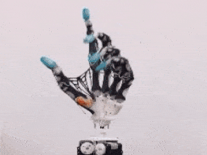
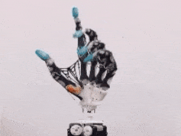

Hi there, my name is Mukhtar Mahdi. I am a courageous 19 year old that aspires to expand my knowledge in all aspects of the technologic and robotic world. I want to deeply understand how to build programs and create technology in order to bring my imaginations to life. Despite breaking down many brick walls in my own life already, I know where I stand is still only the beginning. I am excited to see how much I will grow.
My coding experience began in 2017, freshman year of high school. I participated in an after school program known as "Code Nation". Two days a week for my freshman and sophomore years, I would go to my school's computer classroom and learn HTML 5, CSS 3, and Javascript (Mainly JQuery). I've participated in Code Nation's Hackathon, which consists of a group of 200-300 students. You are split into groups and have a few hours to create any type of website or game surrounding a given theme. In my first Hackathon, my group got 3rd place for creating a maze game. In my second unfortunately we didn't have enough time to style the background and properly finish the game. However, I learned a lot from the process.
Entering Junior year, I was working at Dunkin Donuts. This job was my first real taste of adulthood and the responsibilities attached. I worked there in the summer and during school I worked the weekends. Going back to school I now had 2 AP and one college class. One of My classes was AP Computer Science, where I learned java. After school on Tuesdays and Wednesdays I would go to Manhattan for coding classes. This felt like a lot of pressure at the time as my weekdays would be filled with school and lots of homework due to my AP classes. Every weekend I was working and suddenly I no longer had free time. I tried my best to balance it, however, about two months in I reached my limit. I began to feel like I was losing touch with my childhood and at the time that scared me. I wasn't happy and my school grades were good, but I knew I could have done better. I decided to leave Dunkin Donuts as I didn't want work to affect my grades. Things got much better for me after that. I was able to do school work and coding much more efficiently with the free time I gained on the weekends. I enjoyed traveling to the city for my coding classes and now we were beginning to learn how to create databases and much bigger projects.


However, soon Corona began and we entered the pandemic. My coding classes went remote and I began facing a lot of personal issues at home. After missing a few classes I was far behind. I tried my best to catch up but the more I tried the more complex it got. It began to make me question, do I even like coding? I succumbed to this brick wall. One bigger and tougher than the ones I've broke past before. You see at this time in my life I was going through a lot personally and it broke me down. This is when I began working at a local supermarket. Going through senior year was tuff as I was mentally all over the place. Remote classes made school feel hollow. At this time I no longer spent time coding anymore as I didn't know what I truly wanted to do in life. I took up coding because the opportunity was there, not purely out of desire. I knew I was interested in technology so I knew learning to code would not hurt. Working at that supermarket taught me a lot about life. It taught me my self-worth and how to voice my opinion. It built up my confidence. I began to play a bigger role in paying bills. My income was just what we needed to push ourselves to the next step.
You see I have 3 older siblings, my parents don't work. Before this job my 3 older siblings took care of us, however, they would be living check to check. With me in the picture I would serve as our backup whenever life decides to throw hardships our way. I was happy to finally be able to help them after they took care of us for so long. I worked at the supermarket for about a year. That's when the main manager left to travel to Yemen. I continued to work there for three more months before leaving because I was being over-worked and undervalued. My pervious manager taught me a lot about claiming and fighting for your own. I was no longer happy with the job and left knowing my worth and that's when I began working at a bagel shop. Smith Street Bagels is a very fast-pace work environment and you can have up to 20-30 orders at a time (without including online orders). At this job my abilities were tested heavily. There is a lot of pressure on you from the customers and at the beginning the staff as well. There is a lot of judgement all around you if you are moving slow. However, slowly overtime I've mastered all aspects of this job from making bagels, being on the grill, making juices and smoothies, using the register, and much more. I am the only person in the store that can cover for anybody. While working here I've also experienced a period of great happiness and self-love. I also did college remote classes for my first term while working here.
Everything was good, until this year started. Something felt missing. I didn't feel like I was on the right path anymore. I have lots of love for Smith Street but I felt like it was time for me to get back on track to what I wish to accomplish in life. So I asked myself again, do I even like coding? Is this what I want to do in life? I couldn't say I hated it, but I knew that a web developer isn't what I aspire to do. I want to create and build revolutionary technology and inventions. I want to gain the necessary knowledge to be able to literally bring my imaginations to life. I've realized that what I'm really interested in is robotics. To build robots you have to build programs using code so I am happy that I took up the opportunity to learn some code languages. I am determined to self-teach myself and to show myself what I can create. Sometimes in life we face brick walls that prevent us from moving forward in life. Sometimes we get stuck because we still are not ready for what comes past the wall. And sometimes we get stuck because well maybe we are looking at the wrong wall. In 2020, I faced a wall in my coding journey that I was not able to beat. I went down a path of self-discovery and self-apperication and learned lots of new skills. I learned a lot about who I am, and I know no brick wall will stop me forever. Today, I stand tall facing this same wall and I created this very website as a representation that I can still code after 2 long years. I want to prove I can create something better than I ever did before. As I write this I hear the wall cracking. This wall was here so I can prove how much I really wanted it. It was here so I can take a step back and learn more about myself and what I wanted. I have broken down this wall but I will not proceed down the path of a web developer. I will walk down a new path towards my dreams in the robotic field. Brick Walls redefine our paths.
 

Other than coding, I also like to customize shoes. It was a hobby I picked up during quarantine and It's amazing how they turned out. I love driving to clear my mind and it feels very therapeutic for me. I also am very interested in NFT's and wish to invest into "Staking NFT's" where I can make easy passive income. One hobby I wish to pick up this year is building robots.
Mukhtar.mahdi217@gmail.com
+1 (347)512-9373